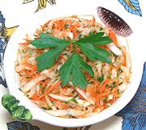

|
Radish & Carrot SaladTurkey - Beyaz Turp Salatasi | ||||
| Serves: Effort: Sched: DoAhead: |
6 salad * 45 min Yes |
This simple salad is favored for winter in Turkey, and is often served with meat dishes. We don't have winter in Southern California but it works fine here anyway. | |||
|
1-1/2 5 3 3 1/4 3 1/3 1/4 |
# oz cl T c T t t |
Daicon Radish (1) Carrots Garlic Olive Oil ExtV Wine Vinegar white Parsley Salt Pepper |
Make: - (45 min - 25 min work)
|